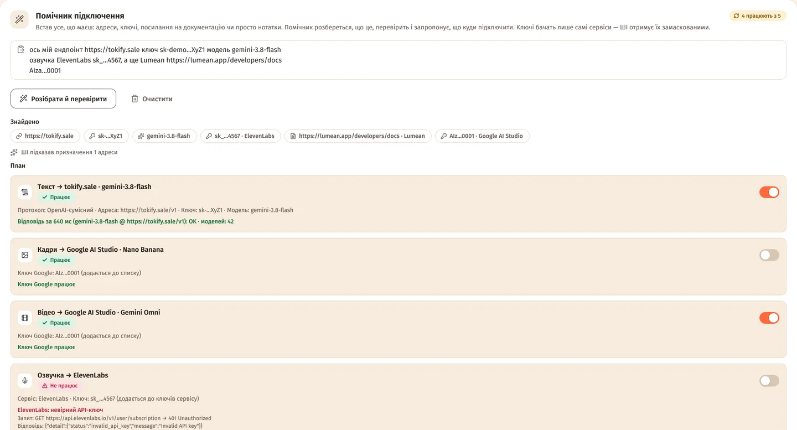

Зміст сторінки
Де він
Налаштування → «Підключення» — перша картка (у вузькому вікні вкладка зветься «Сервіси»). Якщо студії чогось бракує, на Головній поруч із «Відкрити налаштування» буде й кнопка «Помічник підключення».
Як користуватися
- Встав текст — як є, хоч одним повідомленням: «ось мій ендпоінт https://… ключ sk-… модель …», ключ озвучки, посилання на документацію.
- «Розібрати й перевірити». Поки помічник працює, його можна зупинити кнопкою «Скасувати».
- Переглянь «Знайдено» і «План». Зайвий крок вимкни перемикачем праворуч.
- «Застосувати (N)» — або «Відкинути», якщо передумав.

Що він розпізнає
- Адреси. Відомі сервіси помічник упізнає без жодного запиту. Для незнайомих адрес робить лише прості запити на читання — список моделей, голосів чи стан сервера.
- Ключі за виглядом:
sk-ant-…(Anthropic),sk-or-v1-…(OpenRouter),AIza…іAQ.…(Google AI Studio),sk_car_…(Cartesia),gsk_…,xai-…,r8_…(Replicate), ключ fal.ai у виглядіid:secret,cg-…(CarteLink) та інші. - Підказки словами: ключ після «ключ», «key» чи «token», модель після «модель» або за назвою, голоси, посилання на документацію. Слова в тому ж рядку підказують призначення — «озвучка ElevenLabs sk_…» піде в озвучку.
Ключі й ШІ
Справжні ключі бачать лише самі сервіси — під час перевірки. Текстову модель помічник питає, тільки коли щось лишилося незрозумілим, і передає їй текст замаскованим: кожен ключ стає [KEY1], [KEY2]…, у посиланнях ховаються параметри з ключами, а ключі, вже збережені в налаштуваннях, теж приховані.
Посилання на документацію ШІ читає, щоб скласти опис API для «Своє API» чи «Власного сервера».
Перевірка нічого не генерує: текстовий сервіс просять відповісти одним словом.
План і перевірка
«Знайдено» — усе розпізнане, ключі замасковані. «План» — рядок на кожну роль, напр. «Текст → tokify.sale · gemini-3.8-flash»: позначка «Працює», «Не працює» чи «Не перевірено», що саме буде записано, і результат перевірки — з точним запитом і відповіддю, якщо не вийшло.
Кроки, що не пройшли перевірку, одразу вимкнені — увімкни, якщо все одно хочеш їх записати. Угорі видно підсумок: «Усе працює» або, напр., «4 працюють з 5».
Повернути як було
Перед змінами студія зберігає копію налаштувань — «Повернути як було» відновить усе одним натиском. Після застосування студія напише «Підключено: …» — натисни «Перевірити» в картках, щоб переконатися ще раз.
На все в помічника є 10 хвилин. Не встиг — встав менше за раз.
Питання
Помічник передає мої ключі нейронці?
Ні. Ключі отримують лише сервіси, яким вони належать, — під час перевірки. Текстова модель, якщо її взагалі питають, бачить замість ключів [KEY1], [KEY2]…
Він не впізнав мій сервіс. Що робити?
Додай у рядок слово-підказку — «текст», «кадри», «відео», «озвучка» — або посилання на документацію сервісу. Чи підключи вручну: Підключення будь-якого сервісу, Каталоги моделей.
Що буде з ключами Google, які вже є?
Новий ключ Google AI Studio додається до списку, а не замінює його.